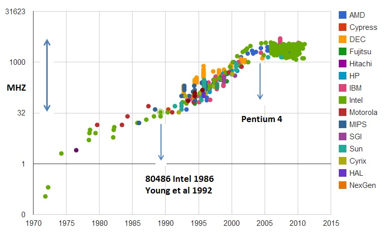

- 00 开篇词 为什么你需要学习计算机组成原理？.md
- 01 冯·诺依曼体系结构：计算机组成的金字塔.md
- 02 给你一张知识地图，计算机组成原理应该这么学.md
- 03 通过你的CPU主频，我们来谈谈“性能”究竟是什么？.md
- 04 穿越功耗墙，我们该从哪些方面提升“性能”？.md
- 05 计算机指令：让我们试试用纸带编程.md
- 06 指令跳转：原来if...else就是goto.md
- 07 函数调用：为什么会发生stack overflow？.md
- 08 ELF和静态链接：为什么程序无法同时在Linux和Windows下运行？.md
- 09 程序装载：“640K内存”真的不够用么？.md
- 10 动态链接：程序内部的“共享单车”.md
- 11 二进制编码：“手持两把锟斤拷，口中疾呼烫烫烫”？.md
- 12 理解电路：从电报机到门电路，我们如何做到“千里传信”？.md
- 13 加法器：如何像搭乐高一样搭电路（上）？.md
- 14 乘法器：如何像搭乐高一样搭电路（下）？.md
- 15 浮点数和定点数（上）：怎么用有限的Bit表示尽可能多的信息？.md
- 16 浮点数和定点数（下）：深入理解浮点数到底有什么用？.md
- 17 建立数据通路（上）：指令加运算=CPU.md
- 18 建立数据通路（中）：指令加运算=CPU.md
- 19 建立数据通路（下）：指令加运算=CPU.md
- 20 面向流水线的指令设计（上）：一心多用的现代CPU.md
- 21 面向流水线的指令设计（下）：奔腾4是怎么失败的？.md
- 22 冒险和预测（一）：hazard是“危”也是“机”.md
- 23 冒险和预测（二）：流水线里的接力赛.md
- 24 冒险和预测（三）：CPU里的“线程池”.md
- 25 冒险和预测（四）：今天下雨了，明天还会下雨么？.md
- 26 Superscalar和VLIW：如何让CPU的吞吐率超过1？.md
- 27 SIMD：如何加速矩阵乘法？.md
- 28 异常和中断：程序出错了怎么办？.md
- 29 CISC和RISC：为什么手机芯片都是ARM？.md
- 30 GPU（上）：为什么玩游戏需要使用GPU？.md
- 31 GPU（下）：为什么深度学习需要使用GPU？.md
- 32 FPGA、ASIC和TPU（上）：计算机体系结构的黄金时代.md
- 33 解读TPU：设计和拆解一块ASIC芯片.md
- 34 理解虚拟机：你在云上拿到的计算机是什么样的？.md
- 35 存储器层次结构全景：数据存储的大金字塔长什么样？.md
- 36 局部性原理：数据库性能跟不上，加个缓存就好了？.md
- 37 理解CPU Cache（上）：“4毫秒”究竟值多少钱？.md
- 38 高速缓存（下）：你确定你的数据更新了么？.md
- 39 MESI协议：如何让多核CPU的高速缓存保持一致？.md
- 40 理解内存（上）：虚拟内存和内存保护是什么？.md
- 41 理解内存（下）：解析TLB和内存保护.md
- 42 总线：计算机内部的高速公路.md
- 43 输入输出设备：我们并不是只能用灯泡显示“0”和“1”.md
- 44 理解IO_WAIT：IO性能到底是怎么回事儿？.md
- 45 机械硬盘：Google早期用过的“黑科技”.md
- 46 SSD硬盘（上）：如何完成性能优化的KPI？.md
- 47 SSD硬盘（下）：如何完成性能优化的KPI？.md
- 48 DMA：为什么Kafka这么快？.md
- 49 数据完整性（上）：硬件坏了怎么办？.md
- 50 数据完整性（下）：如何还原犯罪现场？.md
- 51 分布式计算：如果所有人的大脑都联网会怎样？.md
- 52 设计大型DMP系统（上）：MongoDB并不是什么灵丹妙药.md
- 53 设计大型DMP系统（下）：SSD拯救了所有的DBA.md
- 54 理解Disruptor（上）：带你体会CPU高速缓存的风驰电掣.md
- 55 理解Disruptor（下）：不需要换挡和踩刹车的CPU，有多快？.md
- 结束语 知也无涯，愿你也享受发现的乐趣.md
04 穿越功耗墙，我们该从哪些方面提升“性能”？
上一讲，在讲 CPU 的性能时，我们提到了这样一个公式：
程序的 CPU 执行时间 = 指令数×CPI×Clock Cycle Time
这么来看，如果要提升计算机的性能，我们可以从指令数、CPI 以及 CPU 主频这三个地方入手。要搞定指令数或者 CPI，乍一看都不太容易。于是，研发 CPU 的硬件工程师们，从 80 年代开始，就挑上了 CPU 这个“软柿子”。在 CPU 上多放一点晶体管，不断提升 CPU 的时钟频率，这样就能让 CPU 变得更快，程序的执行时间就会缩短。
于是，从 1978 年 Intel 发布的 8086 CPU 开始，计算机的主频从 5MHz 开始，不断提升。1980 年代中期的 80386 能够跑到 40MHz，1989 年的 486 能够跑到 100MHz，直到 2000 年的奔腾 4 处理器，主频已经到达了 1.4GHz。而消费者也在这 20 年里养成了“看主频”买电脑的习惯。当时已经基本垄断了桌面 CPU 市场的 Intel 更是夸下了海口，表示奔腾 4 所使用的 CPU 结构可以做到 10GHz，颇有一点“大力出奇迹”的意思。
功耗：CPU 的“人体极限”
然而，计算机科学界从来不相信“大力出奇迹”。奔腾 4 的 CPU 主频从来没有达到过 10GHz，最终它的主频上限定格在 3.8GHz。这还不是最糟的，更糟糕的事情是，大家发现，奔腾 4 的主频虽然高，但是它的实际性能却配不上同样的主频。想要用在笔记本上的奔腾 4 2.4GHz 处理器，其性能只和基于奔腾 3 架构的奔腾 M 1.6GHz 处理器差不多。
于是，这一次的“大力出悲剧”，不仅让 Intel 的对手 AMD 获得了喘息之机，更是代表着“主频时代”的终结。后面几代 Intel CPU 主频不但没有上升，反而下降了。到如今，2019 年的最高配置 Intel i9 CPU，主频也只不过是 5GHz 而已。相较于 1978 年到 2000 年，这 20 年里 300 倍的主频提升，从 2000 年到现在的这 19 年，CPU 的主频大概提高了 3 倍。

CPU 的主频变化，在奔腾 4 时代进入了瓶颈期，图片来源
{kind=link}
奔腾 4 的主频为什么没能超过 3.8GHz 的障碍呢？答案就是功耗问题。什么是功耗问题呢？我们先看一个直观的例子。
一个 3.8GHz 的奔腾 4 处理器，满载功率是 130 瓦。这个 130 瓦是什么概念呢？机场允许带上飞机的充电宝的容量上限是 100 瓦时。如果我们把这个 CPU 安在手机里面，不考虑屏幕内存之类的耗电，这个 CPU 满载运行 45 分钟，充电宝里面就没电了。而 iPhone X 使用 ARM 架构的 CPU，功率则只有 4.5 瓦左右。
我们的 CPU，一般都被叫作超大规模集成电路（Very-Large-Scale Integration，VLSI）。这些电路，实际上都是一个个晶体管组合而成的。CPU 在计算，其实就是让晶体管里面的“开关”不断地去“打开”和“关闭”，来组合完成各种运算和功能。
想要计算得快，一方面，我们要在 CPU 里，同样的面积里面，多放一些晶体管，也就是增加密度；另一方面，我们要让晶体管“打开”和“关闭”得更快一点，也就是提升主频。而这两者，都会增加功耗，带来耗电和散热的问题。
这么说可能还是有点抽象，我还是给你举一个例子。你可以把一个计算机 CPU 想象成一个巨大的工厂，里面有很多工人，相当于 CPU 上面的晶体管，互相之间协同工作。
为了工作得快一点，我们要在工厂里多塞一点人。你可能会问，为什么不把工厂造得大一点呢？这是因为，人和人之间如果离得远了，互相之间走过去需要花的时间就会变长，这也会导致性能下降。这就好像如果 CPU 的面积大，晶体管之间的距离变大，电信号传输的时间就会变长，运算速度自然就慢了。
除了多塞一点人，我们还希望每个人的动作都快一点，这样同样的时间里就可以多干一点活儿了。这就相当于提升 CPU 主频，但是动作快，每个人就要出汗散热。要是太热了，对工厂里面的人来说会中暑生病，对 CPU 来说就会崩溃出错。
我们会在 CPU 上面抹硅脂、装风扇，乃至用上水冷或者其他更好的散热设备，就好像在工厂里面装风扇、空调，发冷饮一样。但是同样的空间下，装上风扇空调能够带来的散热效果也是有极限的。
因此，在 CPU 里面，能够放下的晶体管数量和晶体管的“开关”频率也都是有限的。一个 CPU 的功率，可以用这样一个公式来表示：
功耗 ~= 1/2 ×负载电容×电压的平方×开关频率×晶体管数量
那么，为了要提升性能，我们需要不断地增加晶体管数量。同样的面积下，我们想要多放一点晶体管，就要把晶体管造得小一点。这个就是平时我们所说的提升“制程”。从 28nm 到 7nm，相当于晶体管本身变成了原来的 1/4 大小。这个就相当于我们在工厂里，同样的活儿，我们要找瘦小一点的工人，这样一个工厂里面就可以多一些人。我们还要提升主频，让开关的频率变快，也就是要找手脚更快的工人。

但是，功耗增加太多，就会导致 CPU 散热跟不上，这时，我们就需要降低电压。这里有一点非常关键，在整个功耗的公式里面，功耗和电压的平方是成正比的。这意味着电压下降到原来的 1/5，整个的功耗会变成原来的 1/25。
事实上，从 5MHz 主频的 8086 到 5GHz 主频的 Intel i9，CPU 的电压已经从 5V 左右下降到了 1V 左右。这也是为什么我们 CPU 的主频提升了 1000 倍，但是功耗只增长了 40 倍。比如说，我写这篇文章用的是 Surface Go，在这样的轻薄笔记本上，微软就是选择了把电压下降到 0.25V 的低电压 CPU，使得笔记本能有更长的续航时间。
并行优化，理解阿姆达尔定律
虽然制程的优化和电压的下降，在过去的 20 年里，让我们的 CPU 性能有所提升。但是从上世纪九十年代到本世纪初，软件工程师们所用的“面向摩尔定律编程”的套路越来越用不下去了。“写程序不考虑性能，等明年 CPU 性能提升一倍，到时候性能自然就不成问题了”，这种想法已经不可行了。
于是，从奔腾 4 开始，Intel 意识到通过提升主频比较“难”去实现性能提升，边开始推出 Core Duo 这样的多核 CPU，通过提升“吞吐率”而不是“响应时间”，来达到目的。
提升响应时间，就好比提升你用的交通工具的速度，比如原本你是开汽车，现在变成了火车乃至飞机。本来开车从上海到北京要 20 个小时，换成飞机就只要 2 个小时了，但是，在此之上，再想要提升速度就不太容易了。我们的 CPU 在奔腾 4 的年代，就好比已经到了飞机这个速度极限。
那你可能要问了，接下来该怎么办呢？相比于给飞机提速，工程师们又想到了新的办法，可以一次同时开 2 架、4 架乃至 8 架飞机，这就好像我们现在用的 2 核、4 核，乃至 8 核的 CPU。
虽然从上海到北京的时间没有变，但是一次飞 8 架飞机能够运的东西自然就变多了，也就是所谓的“吞吐率”变大了。所以，不管你有没有需要，现在 CPU 的性能就是提升了 2 倍乃至 8 倍、16 倍。这也是一个最常见的提升性能的方式，通过并行提高性能。
这个思想在很多地方都可以使用。举个例子，我们做机器学习程序的时候，需要计算向量的点积，比如向量 W=[W0,W1,W2,…,W15]W=[W0,W1,W2,…,W15] 和向量 X=[X0,X1,X2,…,X15]X=[X0,X1,X2,…,X15]，W⋅X=W0∗X0+W1∗X1+W·X=W0∗X0+W1∗X1+ W2∗X2+…+W15∗X15W2∗X2+…+W15∗X15。这些式子由 16 个乘法和 1 个连加组成。如果你自己一个人用笔来算的话，需要一步一步算 16 次乘法和 15 次加法。如果这个时候我们把这个人物分配给 4 个人，同时去算 W0～W3W0～W3, W4～W7W4～W7, W8～W11W8～W11, W12～W15W12～W15 这样四个部分的结果，再由一个人进行汇总，需要的时间就会缩短。

但是，并不是所有问题，都可以通过并行提高性能来解决。如果想要使用这种思想，需要满足这样几个条件。
第一，需要进行的计算，本身可以分解成几个可以并行的任务。好比上面的乘法和加法计算，几个人可以同时进行，不会影响最后的结果。
第二，需要能够分解好问题，并确保几个人的结果能够汇总到一起。
第三，在“汇总”这个阶段，是没有办法并行进行的，还是得顺序执行，一步一步来。
这就引出了我们在进行性能优化中，常常用到的一个经验定律，阿姆达尔定律（Amdahl’s Law）。这个定律说的就是，对于一个程序进行优化之后，处理器并行运算之后效率提升的情况。具体可以用这样一个公式来表示：
优化后的执行时间 = 受优化影响的执行时间 / 加速倍数 + 不受影响的执行时间
在刚刚的向量点积例子里，4 个人同时计算向量的一小段点积，就是通过并行提高了这部分的计算性能。但是，这 4 个人的计算结果，最终还是要在一个人那里进行汇总相加。这部分汇总相加的时间，是不能通过并行来优化的，也就是上面的公式里面不受影响的执行时间这一部分。
比如上面的各个向量的一小段的点积，需要 100ns，加法需要 20ns，总共需要 120ns。这里通过并行 4 个 CPU 有了 4 倍的加速度。那么最终优化后，就有了 100/4+20=45ns。即使我们增加更多的并行度来提供加速倍数，比如有 100 个 CPU，整个时间也需要 100/100+20=21ns。

总结延伸
我们可以看到，无论是简单地通过提升主频，还是增加更多的 CPU 核心数量，通过并行来提升性能，都会遇到相应的瓶颈。仅仅简单地通过“堆硬件”的方式，在今天已经不能很好地满足我们对于程序性能的期望了。于是，工程师们需要从其他方面开始下功夫了。
在“摩尔定律”和“并行计算”之外，在整个计算机组成层面，还有这样几个原则性的性能提升方法。
1.加速大概率事件。最典型的就是，过去几年流行的深度学习，整个计算过程中，99% 都是向量和矩阵计算，于是，工程师们通过用 GPU 替代 CPU，大幅度提升了深度学习的模型训练过程。本来一个 CPU 需要跑几小时甚至几天的程序，GPU 只需要几分钟就好了。Google 更是不满足于 GPU 的性能，进一步地推出了 TPU。后面的文章，我也会为你讲解 GPU 和 TPU 的基本构造和原理。
2.通过流水线提高性能。现代的工厂里的生产线叫“流水线”。我们可以把装配 iPhone 这样的任务拆分成一个个细分的任务，让每个人都只需要处理一道工序，最大化整个工厂的生产效率。类似的，我们的 CPU 其实就是一个“运算工厂”。我们把 CPU 指令执行的过程进行拆分，细化运行，也是现代 CPU 在主频没有办法提升那么多的情况下，性能仍然可以得到提升的重要原因之一。我们在后面也会讲到，现代 CPU 里是如何通过流水线来提升性能的，以及反面的，过长的流水线会带来什么新的功耗和效率上的负面影响。
3.通过预测提高性能。通过预先猜测下一步该干什么，而不是等上一步运行的结果，提前进行运算，也是让程序跑得更快一点的办法。典型的例子就是在一个循环访问数组的时候，凭经验，你也会猜到下一步我们会访问数组的下一项。后面要讲的“分支和冒险”、“局部性原理”这些 CPU 和存储系统设计方法，其实都是在利用我们对于未来的“预测”，提前进行相应的操作，来提升我们的程序性能。
好了，到这里，我们讲完了计算机组成原理这门课的“前情提要”。一方面，整个组成乃至体系结构，都是基于冯·诺依曼架构组成的软硬件一体的解决方案。另一方面，你需要明白的就是，这里面的方方面面的设计和考虑，除了体系结构层面的抽象和通用性之外，核心需要考虑的是“性能”问题。
接下来，我们就要开始深入组成原理，从一个程序的运行讲起，开始我们的“机器指令”之旅。
补充阅读
如果你学有余力，关于本节内容，推荐你阅读下面两本书的对应章节，深入研读。
-
《计算机组成与设计：软 / 硬件接口》（第 5 版）的 1.7 和 1.10 节，也简单介绍了功耗墙和阿姆达尔定律，你可以拿来细细阅读。
-
如果你想对阿姆达尔定律有个更细致的了解，《深入理解计算机系统》（第 3 版）的 1.9 节不容错过。